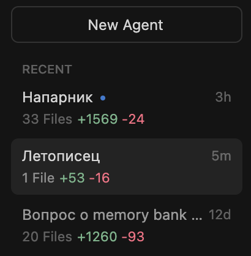

🤖 Мультиагентная среда в Cursor¶
Как работать с несколькими AI-агентами в одном проекте
Добавлено: 2024-12-09 · Обновлено: 2025-12-09
Зачем это нужно¶
- Экономия контекста — каждый агент в своём окне, не мешает другим
- Разделение задач — один думает, другой кодит, третий проверяет
- Параллельная работа — можно вести несколько задач одновременно
Быстрый старт¶
1. Клонируй репозиторий с промптами¶
Теперь у тебя есть папка nocoders/ с готовыми промптами агентов.
2. Добавь в workspace своего проекта¶
В Cursor открой свой проект, затем:
Теперь в sidebar видишь и свой проект, и nocoders:
WORKSPACE
├── my-project/ ← твой проект
└── nocoders/
└── docs/
└── cursor/
└── agency/
└── staff/
└── напарник.md ← промпты тут
3. Создай Agent окно и подключи промпт¶
- Открой новое Agent окно в Cursor
- В первом сообщении напиши:
Cursor подгрузит файл и AI примет роль из промпта.
4. Повтори для других агентов¶
Для каждой роли — своё Agent окно:
| Agent окно | Промпт |
|---|---|
| Напарник | @nocoders/docs/cursor/agency/staff/напарник.md |
| Разраб | @nocoders/docs/cursor/agency/staff/разраб.md |
| Ревизор | @nocoders/docs/cursor/agency/freelance/ревизор.md |
Как устроены Agent окна¶
В Cursor Agent окна — это отдельные чаты с AI. Каждое окно — независимый контекст.
Cursor
├── Agent: "Напарник" ← обсуждение идей
├── Agent: "Разраб" ← написание кода
├── Agent: "Ревизор" ← проверка кода
└── ...
Важно: Агенты не знают друг о друге. Если нужно передать информацию между ними — копируй вручную или используй общие файлы.
Управление Agent окнами¶
Переключение Agent Layout¶
Чтобы переключить вид агентов (sidebar / отдельная панель):
- Горячая клавиша: Cmd+E (macOS) или Ctrl+E (Windows/Linux)
- Или кнопкой в верхней панели:

Рис. 1: Кнопка переключения layout находится в верхней панели справа
Переименование агента¶
Чтобы дать агенту понятное имя (например, "Напарник" или "Летописец"):
- Найди агента в списке Recent в sidebar
- Нажми на три точки (⋯) справа от имени агента
- Выбери Rename

Рис. 2: Список агентов в sidebar — у каждого видно статистику по файлам

Рис. 3: Контекстное меню — Rename, Delete, Mark as Unread
Зачем переименовывать
Когда работаешь с несколькими агентами, имена типа "Agent 1", "Agent 2" путают. Называй по роли: "Напарник", "Ревизор", "Летописец" — сразу видно кто есть кто.
Доступные агенты¶
Штатные (базовая команда)¶
| Агент | Для чего | Промпт |
|---|---|---|
| 🤝 Напарник | Обсуждение идей, архитектура | cursor/agency/staff/напарник.md |
| 🛠️ Разраб | Написание кода | cursor/agency/staff/разраб.md |
| 📜 Летописец | База знаний | cursor/agency/staff/летописец.md |
| 📢 Глашатай | Публикации | cursor/agency/staff/глашатай.md |
Фрилансеры (по необходимости)¶
| Агент | Для чего | Промпт |
|---|---|---|
| 🔍 Ревизор | Code review | cursor/agency/freelance/ревизор.md |
| 🔧 Механик | DevOps, деплой | cursor/agency/freelance/механик.md |
Как использовать: разные сценарии¶
Сценарий 1: Только читаю, ничего не меняю¶
Для кого: Хочу готовые промпты, обновления получать автоматически.
✅ Просто и безопасно.
Сценарий 2: Хочу добавить своих агентов¶
Для кого: Использую готовых + создаю своих.
Свои файлы клади в отдельную папку, не в agency/:
nocoders/
├── agency/ ← оригинальные промпты (не трогай)
└── my-agents/ ← твои агенты (создай эту папку)
└── мой-агент.md
При git pull:
- Папка
agency/обновится - Папка
my-agents/останется нетронутой (git не удаляет твои файлы)
Сценарий 3: Хочу изменить существующие промпты¶
Для кого: Напарник норм, но хочу подправить под себя.
Вариант A — Скопировать и забыть про обновления:
Меняй копию как хочешь. Оригинал не трогаешь.
Вариант B — Создать свой репозиторий:
- На GitHub нажми Fork на странице nocoders
- Это создаст твою копию репозитория (твой-username/nocoders)
- Клонируй свой форк
- Меняй что хочешь, пуш в свой репо
Разница:
- Clone — ты скачал чужой репозиторий, пушить туда не можешь
- Fork — ты создал свою копию на GitHub, это твой репозиторий
Сценарий 4: Не хочу git вообще¶
Для кого: Git это сложно, просто дайте файлы.
- Открой https://github.com/susaninz/nocoders
- Найди нужный md файл
- Нажми "Raw" → скопируй текст
- Вставь в свой файл
Или скачай весь репозиторий как ZIP (кнопка Code → Download ZIP).
Частые вопросы¶
Могу ли я использовать разные модели для разных агентов?¶
Да. В каждом Agent окне можно выбрать свою модель (Opus, Sonnet, GPT-4).
Что будет если я изменил файл и сделал git pull?¶
Git скажет что есть конфликт и попросит разобраться. Твои изменения не пропадут, но надо будет решить конфликт вручную.
Совет: Не меняй оригинальные файлы. Создавай копии или свою папку.
Полезные ссылки¶
Источник: практический опыт вайбкодинга с Cursor